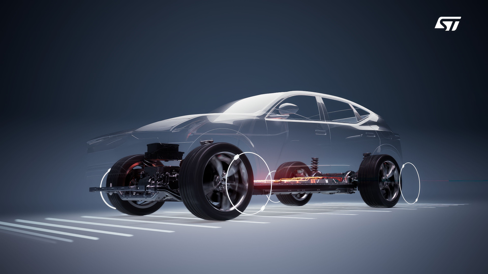
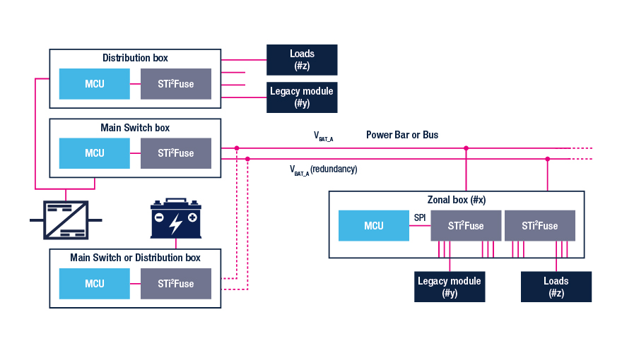

Distribuição inteligente de energia nos carros: adeus, caixa de fusíveis
Carros têm cada vez mais sensores, motores e software. Veja como e-fuses, drivers e PMICs estão mudando o caminho que a energia faz da bateria até cada parte do veículo.

Por que o problema ficou maior
A distribuição de energia é um desafio que atinge todo tipo de carro ao mesmo tempo: elétricos, a combustão, populares e esportivos. Os motivos principais são:
- Mais consumo: cada geração traz mais sensores, motores e funções de segurança, e tudo isso gasta bateria, inclusive com o carro desligado.
- Arquitetura zonal: em vez de um módulo por função, a eletrônica passa a ser agrupada por região do carro (zonas), o que muda o jeito de levar energia até cada carga.
- Peso: as baterias estão mais pesadas, então é preciso economizar em outros pontos, como o tamanho dos chicotes de fios.
- Novas tensões: 800 V para recarga, 48 V ganhando espaço e cargas antigas que ainda usam 12 V. Isso exige conversores DC/DC de até 1 kW só para ir de 48 V para 12 V.
Nesses conversores, o nitreto de gálio (GaN) ajuda bastante: ele permite chavear em frequências mais altas, com menos perdas e componentes magnéticos menores.
E-fuse: o fusível que se rearma
A peça central dessa mudança é o fusível eletrônico (e-fuse). A família STi2Fuse, da ST, tem três vantagens sobre o fusível tradicional:
- Rapidez: reage em menos de 100 µs.
- Precisão: como o corte é mais preciso, os fios podem ser mais finos e o chicote fica menor.
- Rearme: depois de desarmar, o sistema pode testar o circuito de novo para ver se o problema continua.
Por isso os e-fuses já são usados em funções críticas, como o gerenciamento de baterias de carros elétricos e os sistemas de assistência ao motorista (ADAS).

Outros componentes do sistema
| Componente | Função | Exemplo da ST |
|---|---|---|
| Driver high-side | Liga e desliga cargas, mede corrente e faz diagnóstico | VIPower M0-9, com ADC de 10 bits e interface SPI |
| Driver em ponte H | Aciona motores nos dois sentidos (vidros elétricos, tampa do porta-malas) | VIPower M0-7 H-Bridge |
| PMIC | Gera as tensões do sistema e controla os modos de baixo consumo | SPSB081, configurável por SPI para 5 V ou 3,3 V |
| Microcontrolador | É o "inteligente" da distribuição inteligente: comanda e monitora tudo | SPC58G (usado na placa STEVAL-PDUBV1) |
Repare que vários desses chips são configurados por SPI, o mesmo barramento que usamos para ligar sensores e displays a um microcontrolador. A diferença é que aqui o software decide como cada carga do carro será protegida.
Placas para começar
- STEVAL-PDUBV1: placa de referência com dois barramentos de 13 saídas cada, protegidas por STi2Fuse. Tem modo de estacionamento (baixo consumo), modo de montagem (protege quem trabalha na fábrica contra choques) e comunicação por CAN-FD e Ethernet.
- AEK-POW-PDUMINI: versão menor, usada como unidade de distribuição secundária e controlada por comandos CAN.